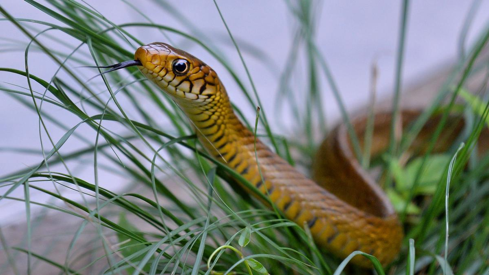
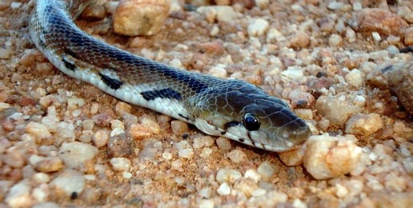
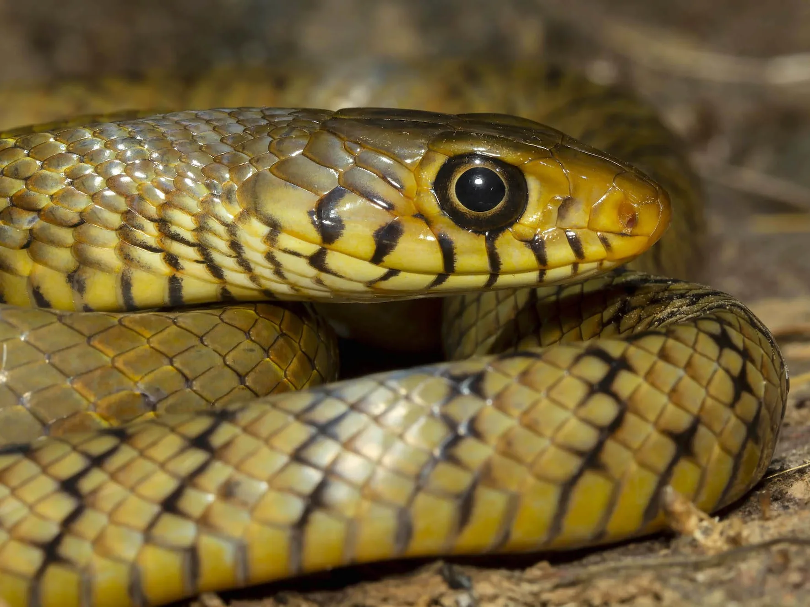
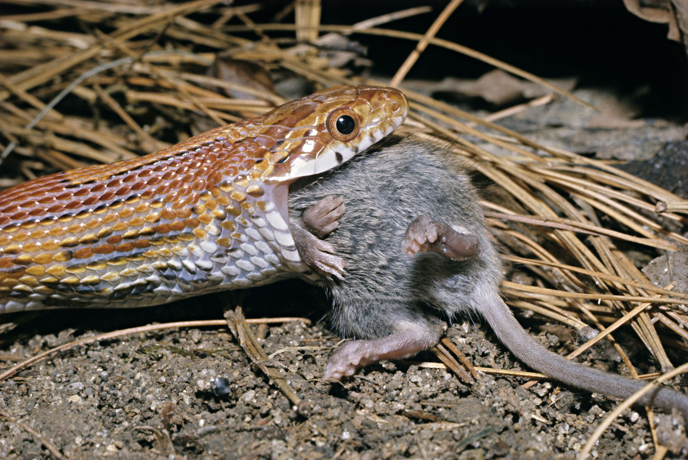

The Indian rat snake (Ptyas mucosa) is a large, non-venomous snake found across the Indian subcontinent and Southeast Asia, known for its speed and alert nature.
It typically grows between 5 to 7 feet, with some individuals exceeding 9 feet in length.
Its coloration varies from olive-green to brown or yellowish, with smooth scales and a slender body.
Highly adaptable, it thrives in forests, grasslands, agricultural fields, and even urban areas.
Feeding primarily on rodents, frogs, birds, and eggs, it plays a crucial role in controlling pest populations.
When threatened, it inflates its neck, hisses loudly, and may strike aggressively, often being mistaken for a cobra.
Despite this intimidating display, it is harmless to humans and prefers to flee rather than fight.

Physical Characteristics
The Indian rat snake (Ptyas mucosa) is a large, slender, and fast-moving non-venomous snake that can grow between 5 to 7 feet, with some individuals exceeding 9 feet in length.
Its body is covered in smooth, glossy scales, with coloration varying from olive-green to brown, yellowish, or gray, depending on the region.
Juveniles often have faint crossbands that fade as they mature.
The head is slightly wider than the neck, with large, round pupils that provide excellent vision.
Its long, muscular body allows it to move swiftly, climb trees, and even swim efficiently.
Due to its size and appearance, it is often mistaken for the venomous cobra, especially when it inflates its neck as a defensive display.

Habitat
The Indian rat snake (Ptyas mucosa) is highly adaptable and thrives in a wide range of habitats, including forests, grasslands, wetlands, agricultural fields, and even urban areas.
It is commonly found near water sources such as rivers, lakes, and ponds, as well as in farmlands where rodents are abundant.
This snake is also frequently seen in human settlements, including villages and cities, where it helps control pest populations.
Its ability to climb trees and swim allows it to access diverse environments, making it one of the most widespread snake species in the Indian subcontinent.
During extreme heat or cold, it may take shelter in burrows, rock crevices, or abandoned buildings.

Diet and Behavior
The Indian rat snake (Ptyas mucosa) is a fast-moving, non-venomous snake with a diverse diet that includes rodents, birds, eggs, frogs, lizards, and even small snakes, making it an essential predator for controlling pest populations.
It is an active hunter, relying on speed and agility rather than constriction to capture its prey.
Diurnal in nature, it is most active during the day and is commonly found in forests, farmlands, and even urban areas.
When threatened, it inflates its neck, hisses loudly, and may strike aggressively, often being mistaken for a cobra.
However, it is harmless to humans and prefers to flee rather than engage in conflict.
An excellent climber and swimmer, the Indian rat snake can quickly escape danger by moving through trees or water with ease.

Bite & Jaw Mechanism
The Indian rat snake (Ptyas mucosa) has a specialized bite and jaw mechanism designed for efficiently capturing and swallowing prey.
Like all snakes, it has a highly flexible skull with loosely connected jawbones, allowing it to open its mouth wide enough to swallow prey much larger than its head.
Its teeth are small, sharp, and backward-curving, helping it grip and hold onto slippery prey like rodents, birds, and frogs.
Although non-venomous, it may bite in self-defense if threatened, delivering a painful but harmless bite.
Unlike constrictors, the Indian rat snake subdues its prey using a strong grip and swift swallowing rather than suffocation.
Its quick striking ability, combined with powerful jaw muscles, enables it to capture prey efficiently and defend itself when necessary.